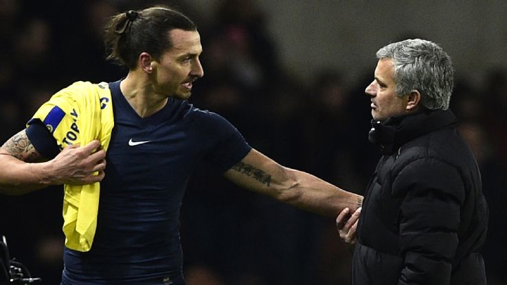

Saul Niguez, the latest on MU's hitlist

Manchester United are prepared to kick-start the Jose Mourinho era with a sensational £54 million bid for Atletico Madrid's mercurial midfield talent Saul Niguez, says the Mail. In a move that would send waves around Europe after Saul's pivotal role in Diego Simeone's side's run to the Champions League final in Milan this Saturday, United will break the bank for one of Europe's best young players after losing out to Bayern Munich for Renato Sanches.
Manchester United are reportedly pursuing a bid to prise Neymar away from Barcelona, despite the striker being in talks to sign a new five-year contract. Globo Esporte (via the Express) reckon the Brazil international's new deal would include a big pay rise and an increase in his release clause to £170 million, but in the meantime United are said to be one of several clubs with offers on the table in an attempt to turn Neymar's head.
Jozy Altidore (hamstring) out 6-8 weeks, will miss Copa America

Altidore injured his hamstring in Toronto FC's 4-3 loss to the Vancouver Whitecaps over the weekend. It will mark the third consecutive big tournament for the USA that will see him hampered by the same injury. Altidore was hurt in the early stages of the opening game of the 2014 World Cup against Ghana and was forced out for the remainder of the tournament.
Man United to pay Zlatan Ibrahimovic £200k per week
Zlatan Ibrahimovic heads the talk in the English newspapers on Wednesday. The Mail reports that the former PSG forward makes up part of Mourinho's shopping list in the market and will command an astonishing £8 million signing-on fee and wages that could climb over £200,000-per-week.
Jack Wilshere, Alexis Sanchez to lead Pep's Manchester City revolution?
The Mirror are reporting that City will raid Arsenal for Jack Wilshere and Alexis Sanchez in a sensational double deal. The Citizens, who have previously shown interest in Wilshere, will tempt the Gunners with a £40 million offer and hand the England international a sizeable raise on his wages.
Cristiano Ronaldo: I will retire with Real Madrid
Cristiano Ronaldo plans to retire as a member of Real Madrid, he tells Spanish newspaper La Marca. “Paris Saint-Germain and Manchester City can forget it, I'm retiring at Real Madrid,” he said. “I have had good and bad moments, four years ago I was not happy but there is no better place to be than here.”